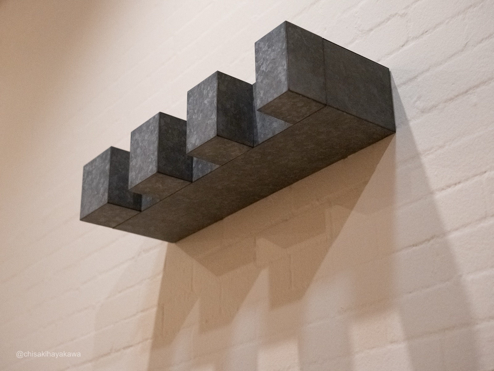
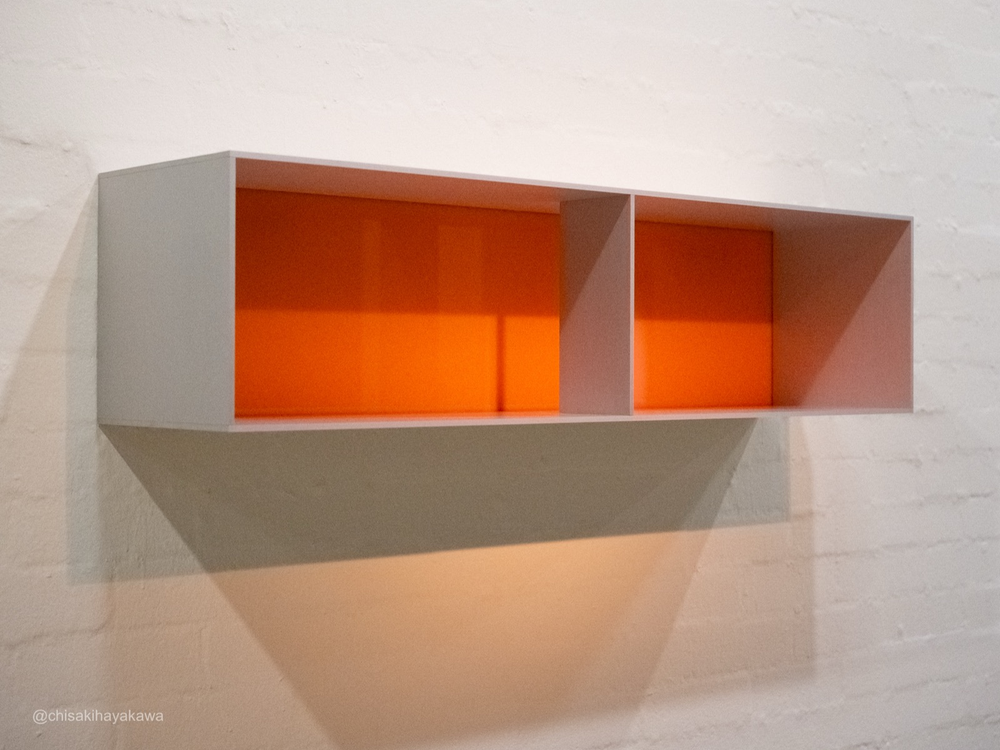
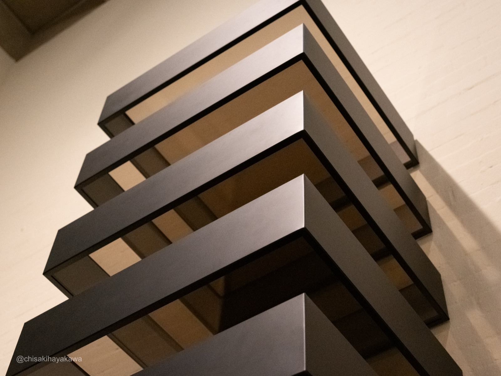
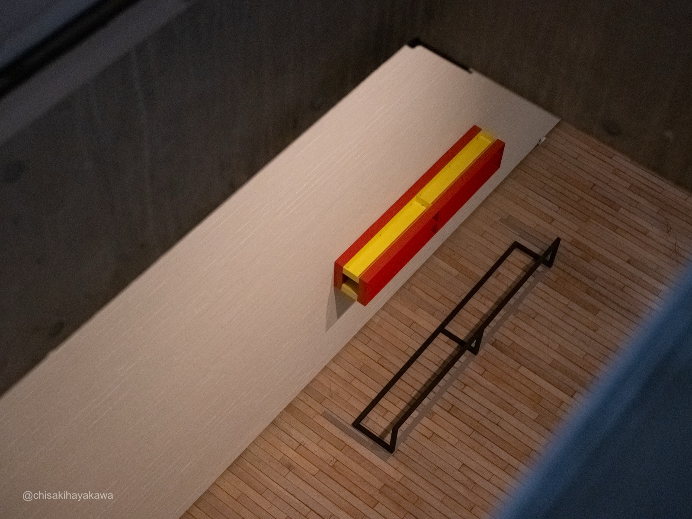

ジャッド｜マーファ展
Donald Judd — Watari-Um Museum, Tokyo
素材・光・色・空間・反復・時間の6つの視点でジャッドを読む。
01 / Material

Untitled, 1967, Galvanized iron. Collection: Ohara Museum of Art, Ohara Art Foundation, Kurashiki
亜鉛メッキ鉄の表面に浮かぶ結晶模様——工業素材がそのまま視覚になる
1967年の亜鉛メッキ鉄スタック。表面に浮かぶスパングルと呼ばれる結晶模様は、雪の結晶や星のような幾何学模様で、純粋に綺麗だった。塗装でもテクスチャでもなく、亜鉛という素材が自ら生み出したもの。ジャッドはこの種の素材を「ありふれた商業用材料」と呼びながら、それ自体が色であり質感であることを見ていた。
02 / Light

WATARI-UM, The Museum of Contemporary Art (Mario Botta, 1990)
雨のグレーの光が、金属の表面を静かにしていた
訪問日は雨だった。ボッタの建築が取り込むグレーがかった外光は、コンクリートの陰影と金属表面の反射を穏やかに統合していた。天井のダイヤ格子から落ちる光、縦長3連窓から入る光。晴れた日に来ていたら、同じ作品がまったく違って見えていたと思う。
02 / Light
雨のグレーの光が、金属の表面を静かにしていた
訪問日は雨だった。ボッタの建築が取り込むグレーがかった外光は、コンクリートの陰影と金属表面の反射を穏やかに統合していた。天井のダイヤ格子から落ちる光、縦長3連窓から入る光。
晴れた日に来ていたら、同じ作品がまったく違って見えていたと思う。マーファの乾いた砂漠の光の下では、なおさら。
WATARI-UM, The Museum of Contemporary Art (Mario Botta, 1990)
03 / Color

Untitled, 1991, Clear anodized aluminum with transparent amber over yellow plexiglass. Collection: Judd Foundation
プレキシグラスの色は、素材に最初からある色だった
金属に塗料を重ねると素材の本質を偽る——そう考えたジャッドは、プレキシグラスという「それ自体が色を持つ素材」に至った。3階にはRALカラーチャートの実物が展示されていて、色の選択が抽象的な判断ではなく物質的な比較のプロセスだったことがわかる。アンバーのプレキシグラスの奥から、不思議なオレンジの光が底面に漏れていた。
04 / Space

WATARI-UM, The Museum of Contemporary Art (Mario Botta, 1990)
この建物は中性的な容器ではなく、ジャッドの作品を見る体験の一部だった
マリオ・ボッタ設計のワタリウムは初訪問だった。三角形の平面、吹き抜けと通常天井の使い分け、外階段の曲線とグリッドガラスの直線。「ニュートラルな空間など存在しない」と書いたジャッドの作品が、この建築の中で見えている。マーファからの仮住まいであっても、この空間は中性的な容器ではなかった。
04 / Space
この建物は中性的な容器ではなく、ジャッドの作品を見る体験の一部だった
マリオ・ボッタ設計のワタリウムは初訪問だった。三角形の平面、吹き抜けと通常天井の使い分け、外階段の曲線とグリッドガラスの直線。「ニュートラルな空間など存在しない」と書いたジャッドの作品が、この建築の中で見えている。
マーファからの仮住まいであっても、この空間は中性的な容器ではなかった。建物自体がもうひとつの展示物だった。
WATARI-UM, The Museum of Contemporary Art (Mario Botta, 1990)
05 / Repetition

Untitled, 1990, Black anodized aluminum with bronze plexiglass (10 units). Collection: Shizuoka Prefectural Museum of Art
展示室で一番長くいた作品。3メートルの反復が体に入ってくる
黒アノダイズドアルミとブロンズのプレキシグラス、10ユニット。2階の吹き抜けに3メートルを超えて積み重なるスタックは、この展示で一番足が止まった作品だった。不透明な金属と半透明な樹脂が等間隔で交替する。壁から突き出した金属の重さが体に伝わってくる。見上げているうちに、反復は数えるものではなく、体が受け取るものだとわかる。
06 / Time

Untitled, 1989, Painted aluminum. Collection: Kirishima Open-Air Museum
2Fで正面から見た作品を、3Fから見下ろしている
階を移動するたびに、さっき見た作品が別の角度から見えてくる。ボッタの吹き抜け構造がそれを可能にしている。同じ作品が、自分の体験の中の別の時点として存在する。グラフィックデザインやPCの中で仕事をしてきた自分にとって、3メートルの金属を見上げ、光の中で素材を見る体験は画面では得られないものだった。この展示は2026年6月に終わる。ジャッドが「その場限りのパフォーマンスにしてはならない」と書いた作品を、一時的な企画展で見ている。その矛盾がずっと残っている。
私にとって、ここは何もない田舎ではない。世界の中心なんだ。
Donald Judd, 1993
Exhibition Info
Exhibitionドナルド・ジャッド｜マーファ展
Venueワタリウム美術館 — 東京都渋谷区神宮前3-7-6
Dates2026.02.15 – 06.07
Hours11:00 – 19:00（月曜休館）
Admission一般 ¥1,500 / 学生 ¥1,300
Photo撮影可（受付で確認済み）
Websitewatarium.co.jp
Disclaimer
本ページは展覧会「ジャッド｜マーファ展」（ワタリウム美術館、2026年）の鑑賞記録として作成した個人制作物です。展示情報は公式サイト（watarium.co.jp）および公開情報に基づいています。記述には筆者の解釈が含まれます。引用文の出典はすべて明記しています。写真はすべて筆者撮影です（撮影許可の範囲内）。展示の正確な情報は公式サイトをご確認ください。
本ページは展覧会「ジャッド｜マーファ展」（ワタリウム美術館、2026年）の鑑賞記録として作成した個人制作物です。展示情報は公式サイト（watarium.co.jp）および公開情報に基づいています。記述には筆者の解釈が含まれます。引用文の出典はすべて明記しています。写真はすべて筆者撮影です（撮影許可の範囲内）。展示の正確な情報は公式サイトをご確認ください。